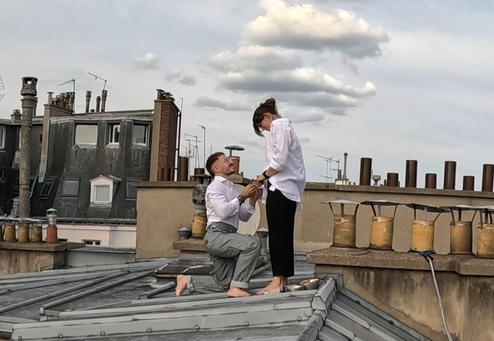
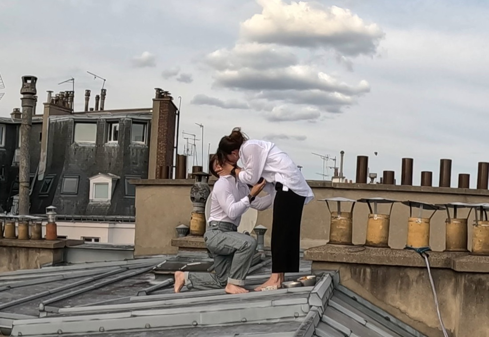
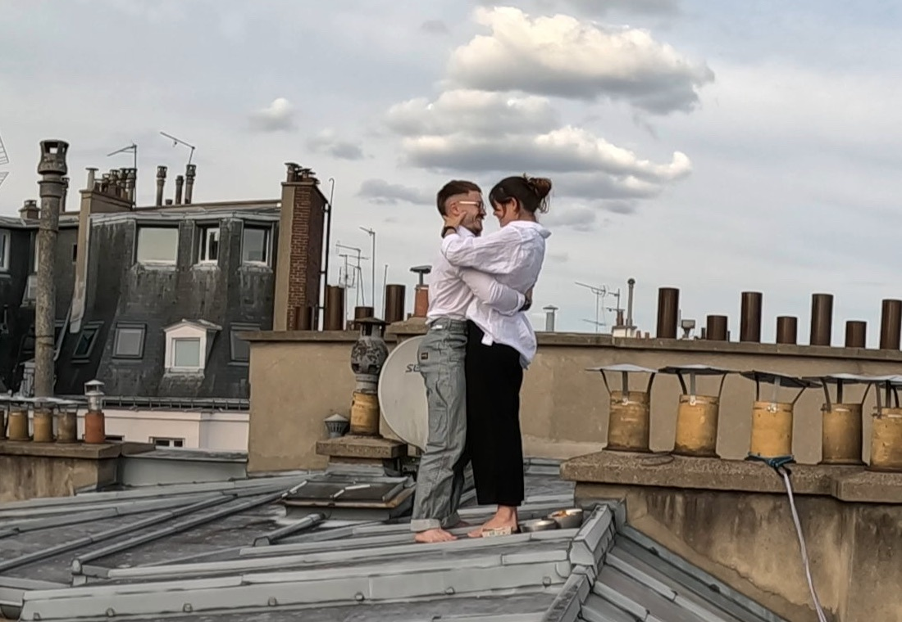
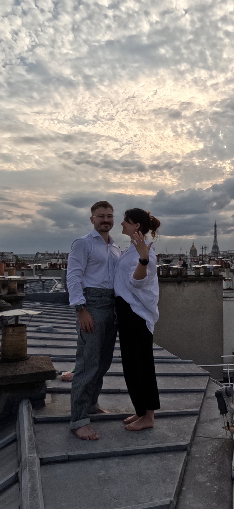

Louisa & Lysandre
SAVE THE DATE
On se marie !
Elle a dit oui !



La date
Samedi 4 Septembre 2027
| L | M | M | J | V | S | D |
|---|---|---|---|---|---|---|
| 1 | 2 | 3 | 4 | 5 | ||
| 6 | 7 | 8 | 9 | 10 | 11 | 12 |
| 13 | 14 | 15 | 16 | 17 | 18 | 19 |
| 20 | 21 | 22 | 23 | 24 | 25 | 26 |
| 27 | 28 | 29 | 30 |
Le lieu
Château de Chambord
41250 Chambord · Loir-et-Cher, Centre-Val de Loire
- En voitureEnviron 2 h depuis Paris par l'A10, sortie Mer.
- En trainParis → Blois-Chambord ou Saint-Pierre-des-Corps, puis 20 min à 1 h de route.
